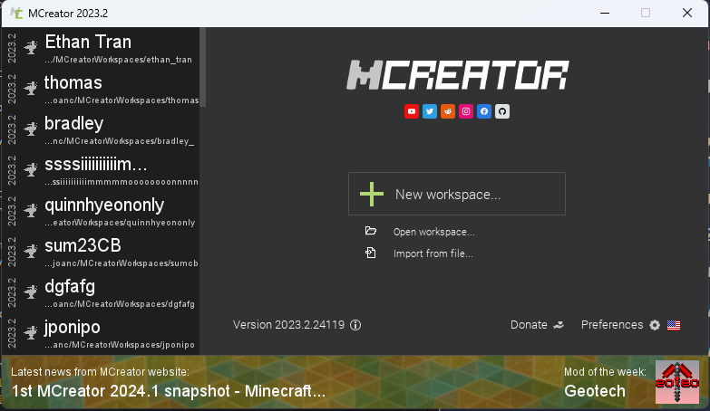
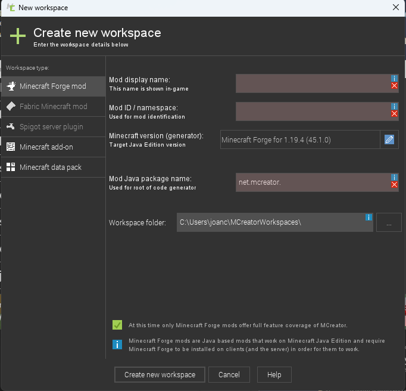

Welcome to Setup!
We want to make sure the camp runs as smoothly as possible, and throughout the
years we have found out some ways to make that happen! This should help eliminate all
hiccups you might run into when doing the camp setup
First, let's create some workspaces. I like to follow a naming scheme for these workspaces, so mine are usually in the form of
{season}{year}{computerLetter}
So, for example: sum23A, win24C, etc.
The numbers will be parsed out when exporting, so it is best to do the letters,
as "sum231" will parse into sum, as well as "sum232", "sum233", etc. Please make the workspaces on all the desktops, and maybe even some of the
laptops if the camp is REALLY full.
To make the workspace, follow these instructions:

Launch MCreator, and click the "New Workspace" button
Here, fill out the Mod display name. This is where you type your "sum23A" stuff. It should autocomplete the Mod ID and other stuff for you